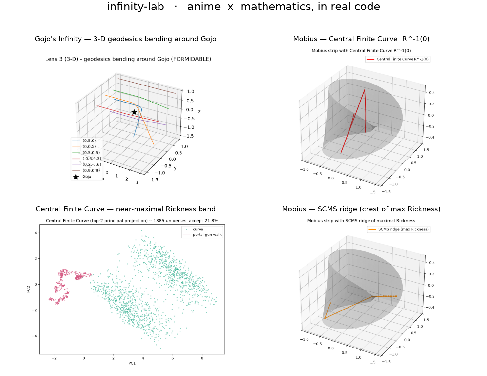
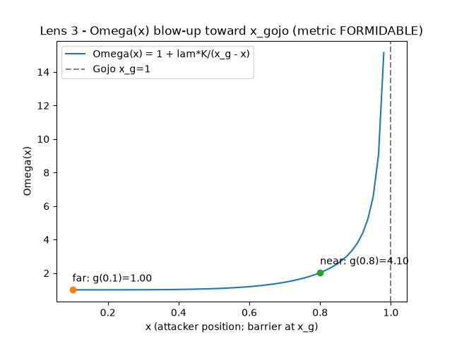
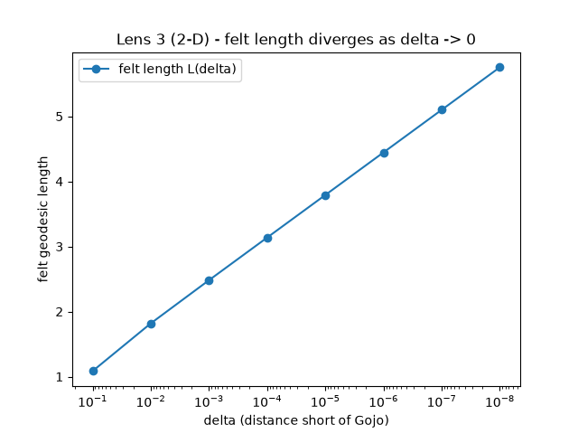
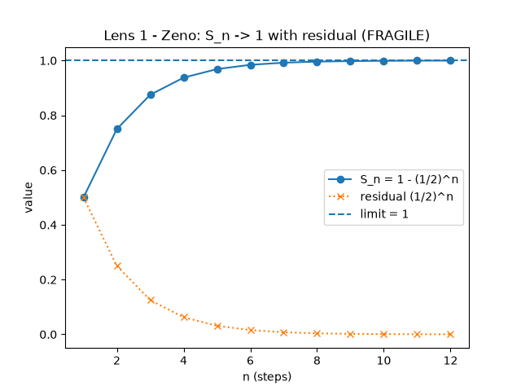
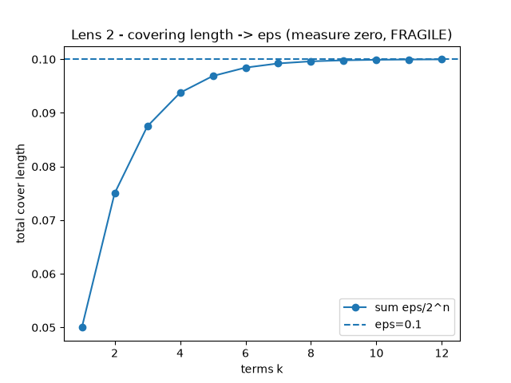
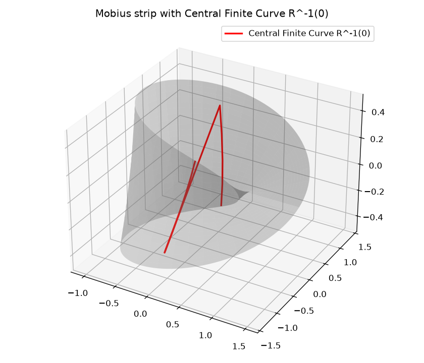
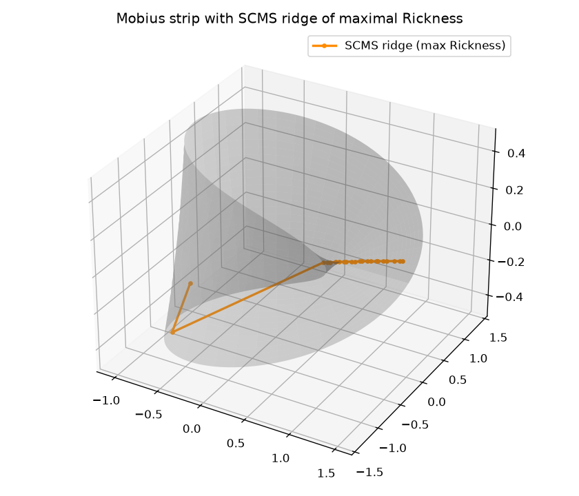
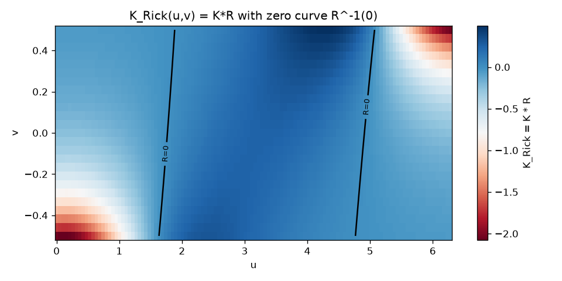

infinity-lab artifact gallery
Rendered artifacts
Every plot and animation is rendered directly by the Python pipeline. Images as
<img>, animations as looping muted <video> (MP4).
The largest GIFs are omitted in favour of their smaller MP4 equivalents.
infinity-lab — poster
The composite title card for the monorepo.

gojo_infinity
Four independent mathematical lenses on whether an attacker can ever reach Gojo.






mobius_rickness
The Central Finite Curve as a real zero set — a ruled surface with K < 0 everywhere.



central_finite_curve
An infinite-but-bounded arc: every reality where a Rick is the smartest being.